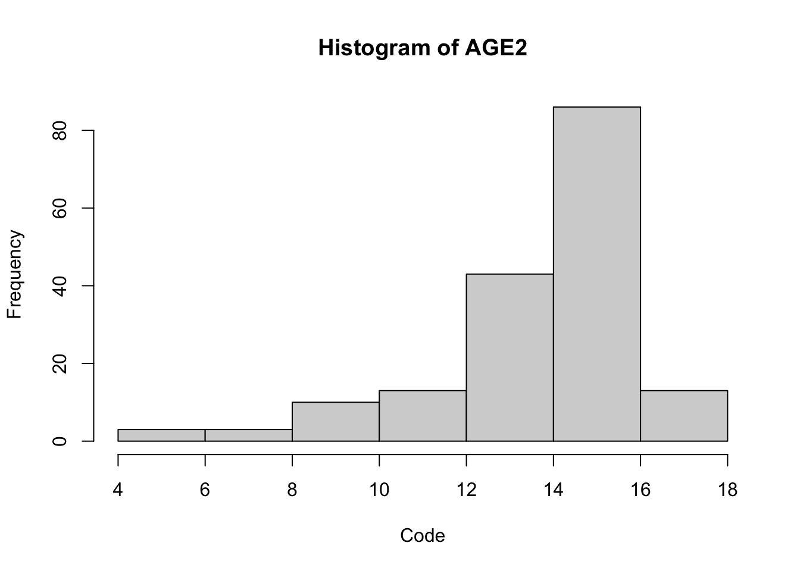
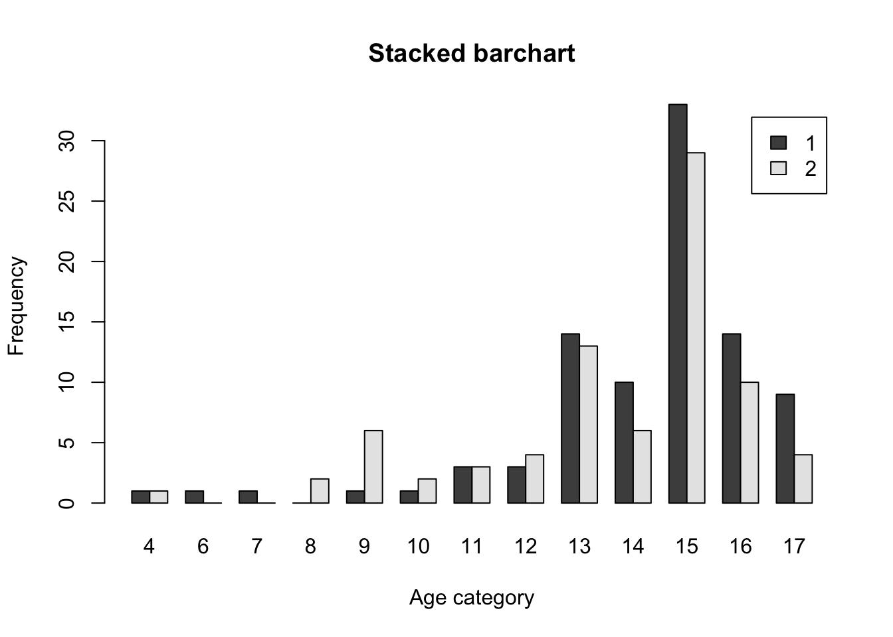
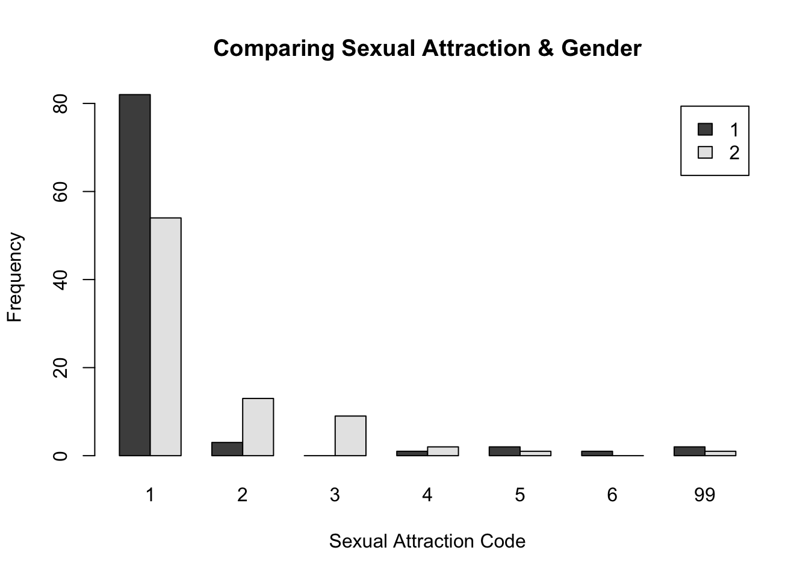
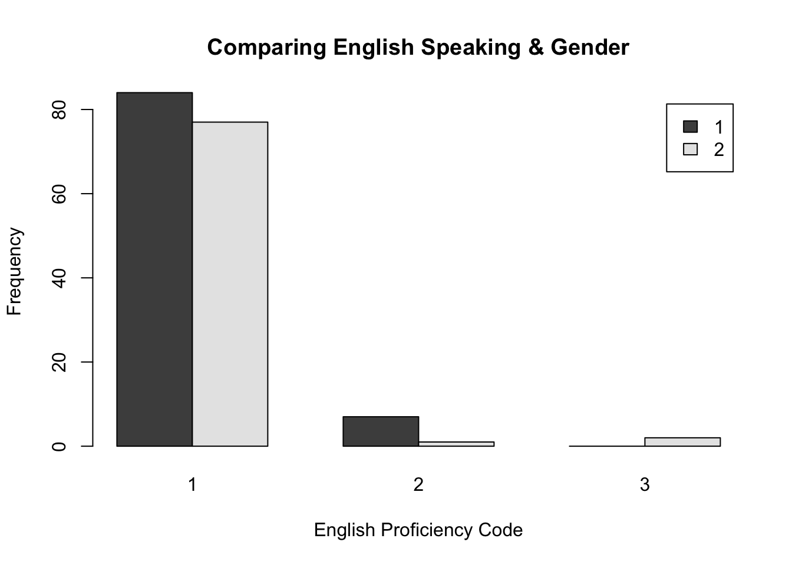

Answer: I’ve loaded the data.
library(readr)
dat_nsduh_small_1 <- read_csv("~/Downloads/dat.nsduh.small.1.csv")## Rows: 171 Columns: 7## ── Column specification ────────────────────────────────────────────────────────
## Delimiter: ","
## dbl (7): mjage, cigage, iralcage, age2, sexatract, speakengl, irsex##
## ℹ Use `spec()` to retrieve the full column specification for this data.
## ℹ Specify the column types or set `show_col_types = FALSE` to quiet this message.setwd("/Users/cruzllano/Documents/R/")dat2 <- read_csv("~/Downloads/dat.nsduh.small.1.csv")## Rows: 171 Columns: 7## ── Column specification ────────────────────────────────────────────────────────
## Delimiter: ","
## dbl (7): mjage, cigage, iralcage, age2, sexatract, speakengl, irsex##
## ℹ Use `spec()` to retrieve the full column specification for this data.
## ℹ Specify the column types or set `show_col_types = FALSE` to quiet this message.dim(dat2)## [1] 171 7Answer: The dimensions of the dataset are 171 by 7.
names(dat2)
names(dat2)## [1] "mjage" "cigage" "iralcage" "age2" "sexatract" "speakengl"
## [7] "irsex"Answer: The varibles in this dataset are mjage, cigage, iralcage, age2, sexatract, speakengl, and irsex. Mjage describes how old someone was when they first used marijuana or hashish. Cigage describes how old someone was when they first started smoking cigarettes everyday. Iralcage describes how old someone was when they first tried alcochol. AGE2 describes the final edited age of the respondant. Sexatract describes a respondant’s sexual attraction to others. Speakengl describes how well someone speaks English. Irsex describes someone’s gender.
This dataset is about the age at which individuals of varying ages, sexual orientations, genders, and English proficiencies first began experimenting or using particular drugs (including but not limited to marijuana, cigarettes, and alcohol). The data was collected by the National Survey on Drug Use and Health. This is a simple random sample as the first 1000 cases were choosen. The purpose of this generating this data was to form more general conclusions about the population from the sample, pertaining to drug use. This way, the NSDUH can better predict where to provide support prevention and monitor substance use trends.
summary(dat2)
hist(dat2$age2, main="Histogram of AGE2", xlab="Code", ylab="Frequency")
Answer: The age distribution is skewed left with older respondents tending to be more common. The median of the distribution is 15 which indicates respondents between 35 and 49 years old in the codebook. The mean is about 14 which indicates respondents between 30 and 34 years old in the codebook.
Answer: This age distribution seems representative of the US population because the median would indicate about half of the respondents are under 35 years old and half are above 49 years old (30-35 is typically defined as middle-aged). Also, the extremes of the data (12 years old and 65 years or older) are the lowest represented in the histogram which would make sense.
table(dat2$irsex)##
## 1 2
## 91 80Answer: The sample is nearly balanced in terms of gender, there are 11 more males than females in the sample, however.
tab.agesex <- table(dat2$irsex, dat2$age2)
barplot(tab.agesex,
main = "Stacked barchart",
xlab = "Age category", ylab = "Frequency",
legend.text = rownames(tab.agesex),
beside = TRUE) # Stacked bars (default)
Answer: From this plot I can conclude that generally, there were more male resondents. Also, that older respondents, particularly those 26 years and older were typically more likely to be male than female. There may be a direct relationship, such that as age increased the likelihood of a respondent being male increased.
summary(dat2)## mjage cigage iralcage age2
## Min. : 7.00 Min. :10.00 Min. : 5.00 Min. : 4.00
## 1st Qu.:14.00 1st Qu.:15.00 1st Qu.:13.00 1st Qu.:13.00
## Median :16.00 Median :17.00 Median :15.00 Median :15.00
## Mean :15.99 Mean :17.65 Mean :14.95 Mean :13.98
## 3rd Qu.:17.50 3rd Qu.:19.00 3rd Qu.:17.00 3rd Qu.:15.00
## Max. :35.00 Max. :50.00 Max. :23.00 Max. :17.00
## sexatract speakengl irsex
## Min. : 1.00 Min. :1.00 Min. :1.000
## 1st Qu.: 1.00 1st Qu.:1.00 1st Qu.:1.000
## Median : 1.00 Median :1.00 Median :1.000
## Mean : 3.07 Mean :1.07 Mean :1.468
## 3rd Qu.: 1.00 3rd Qu.:1.00 3rd Qu.:2.000
## Max. :99.00 Max. :3.00 Max. :2.000Answer: According to the data, individuals tend to use alcohol earlier because the data for alcohol has the lowest mean, median, mean, and maximum as well for the different substances recorded. The measures of central tendency being the lowest (relatively) would indicate that alcohol is used earlier compared to the other subtances recorded.
table(dat2$sexatract)##
## 1 2 3 4 5 6 99
## 136 16 9 3 3 1 3Answer: The distribution is skewed right which is what I expected since only being attracted to the opposite sex (code 1) is most common. As the code numbers increased from 1 to 6, there was less strict of an attraction to the opposite sex and more openness to attraction to the same sex, so this distribution is consistent with my expectations of bisexuality and homosexuality not being as common.
tab.agesex <- table(dat2$irsex, dat2$sexatract)
barplot(tab.agesex,
main = "Comparing Sexual Attraction & Gender",
xlab = "Sexual Attraction Code", ylab = "Frequency",
legend.text = rownames(tab.agesex),
beside = TRUE) # Stacked bars (default)
Answer: It looks like the highest distribution is associated with respondents only attracted to the opposite sex (this graph would be skewed right). Females tend to show more variability in sexual attraction than males (there’s more female respondents for categories representing those mostly attracted to opposite sex, bisexual, or mostly attracted to the same sex). You can likely conclude from this sample, that the population is composed of a greater number of heterosexual males.
table(dat2$speakengl)##
## 1 2 3
## 161 8 2Answer: The distribution isn’t widely spread out as 161/171 respondents had the same response about how well they spoke English (“very well”). It would look skewed right. This is what I might expect since English is the most spoken language in the world, so a random sample US population should be representative of that.
tab.agesex <- table(dat2$irsex, dat2$speakengl)
barplot(tab.agesex,
main = "Comparing English Speaking & Gender",
xlab = "English Proficiency Code", ylab = "Frequency",
legend.text = rownames(tab.agesex),
beside = TRUE) # Stacked bars (default)
Answer: There are more English speaker males since code 1 represents “very well” at English speaking and code 2 represents “well” at English speaking. Code 3 represents “not well” and includes more female respondents.